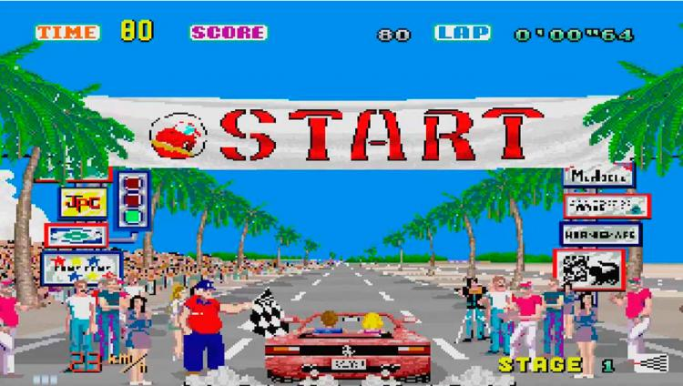

Out Run
Out Run is a racing video game. It is known for its pioneering hardware and graphics, nonlinear gameplay, and a selectable soundtrack with music composed by Hiroshi Kawaguchi. The goal is to avoid traffic and reach one of five destinations.
Sega - 1986
Learn moreBurgerTime
BurgerTime is a 1982 arcade game created by Data East initially for its DECO Cassette System. The player is chef Peter Pepper, who must walk over hamburger ingredients located across a maze of platforms while avoiding pursuing characters.
Data East - 1982
Learn moreDefender
Defender is an arcade video game developed and released by Williams Electronics in 1981. A horizontally scrolling shoot 'em up, the game is set on an unnamed planet where the player must defeat waves of invading aliens while protecting astronauts.
Williams Electronics - 1981
Learn moreKung-Fu Master

Kung-Fu Master is a side-scrolling beat 'em up game produced by Irem as an arcade game in 1984 and distributed by Data East in North America. The game was initially released in Japan under the title of Spartan X as a tie-in based on the Jackie Chan film Wheels on Meals.
Irem - 1984
Learn moreStar Wars
Star Wars is a first-person rail shooter designed by Mike Hally and released in arcades by Atari, Inc. in 1983. It uses 3D color vector graphics to simulate the assault on the Death Star from the 1977 film Star Wars. Developed during the Golden Age of Arcade Games, Star Wars has been included on lists of the greatest video games of all time.
Atari - 1983
Learn moreGhosts 'n Goblins
Ghosts 'n Goblins is a run and gun platformer video game series created by Tokuro Fujiwara and developed by Capcom. The first entry in the series was Ghosts 'n Goblins, released as an arcade title on September 19, 1985. The series has subsequently been released on and ported to a variety of game consoles and mobile platforms and spawned several sequels and spin-offs.
Capcom - 1985
Learn more